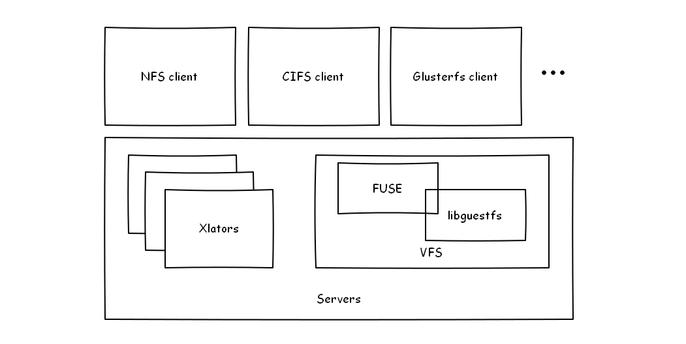
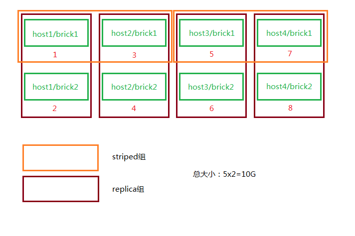
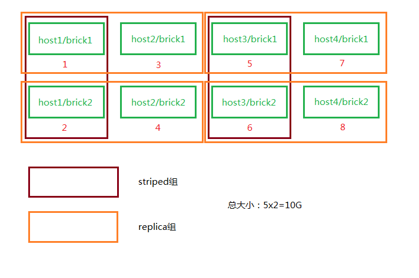

第二章¶
2.1 谈谈分布式存储¶
计算机领域中有诸多有意思的东西可以把玩，在这儿且看看分布式存储。
集群文件系统
在某些场景下又可以称作网络文件系统、并行文件系统，在70年代由IBM提出并实现原型。
有几种方法可以实现集群形式，但多数仅仅是节点直连存储而不是将存储之上的文件系统进行合理“分布”。分布式文件系统同时挂载于多个服务器上，并在它们之间共享，可以提供类似于位置无关的数据定位或冗余等特点。并行文件系统是一种集群式的文件系统，它将数据分布于多个节点，其主要目的是提供冗余和提高读写性能。
共享磁盘（Shared-disk）/Storage-area network(SAN)
从应用程序使用的文件级别，到SAN之间的块级别的操作，诸如权限控制和传输，都是发生在客户端节点上。共享磁盘（Shared-disk）文件系统，在并行控制上做了很多工作，以至于其拥有比较一致连贯的文件系统视图，从而避免了多个客户端试图同时访问同一设备时数据断片或丢失的情况发生。其中有种技术叫做围栏（Fencing），就是在某个或某些节点发生断片时，集群自动将这些节点隔离（关机、断网、自恢复），保证其他节点数据访问的正确性。元数据（Metadata）类似目录，可以让所有的机器都能查找使用所有信息，在不同的架构中有不同的保存方式，有的均匀分布于集群，有的存储在中央节点。
实现的方式有iSCSI，AoE，FC，Infiniband等，比较著名的产品有Redhat GFS、Sun QFS、Vmware VMFS等。
分布式文件系统
分布式文件系统则不是块级别的共享的形式了，所有加进来的存储（文件系统）都是整个文件系统的一部分，所有数据的传输也是依靠网络来的。
它的设计有这么几个原则：
- 访问透明 客户端在其上的文件操作与本地文件系统无异
- 位置透明 其上的文件不代表其存储位置，只要给了全名就能访问
- 并发透明 所有客户端持有的文件系统的状态在任何时候都是一致的，不会出现A修改了F文件，但是B愣了半天才发现。
- 失败透明 理解为阻塞操作，不成功不回头。
- 异构性 文件系统可以在多种硬件以及操作系统下部署使用。
- 扩展性 随时添加进新的节点，无视其资格新旧。
- 冗余透明 客户端不需要了解文件存在于多个节点上这一事实。
- 迁移透明 客户端不需要了解文件根据负载均衡策略迁移的状况。
实现的方式有NFS、CIFS、SMB、NCP等，比较著名的产品有Google GFS、Hadoop HDFS、GlusterFS、Lustre等。
FUSE，filesystem in user space。
FUSE全名Filesystem in Userspace，是在类UNIX系统下的一个机制，可以让普通用户创建修改访问文件系统。功能就是连接内核接口与用户控件程序的一座“桥”，目前普遍存在于多个操作系统中，比如Linux、BSD、Solaris、OSX、Android等。
FUSE来源于AVFS，不同于传统文件系统从磁盘读写数据，FUSE在文件系统或磁盘中有“转换”的角色，本身并不会存储数据。
在Linux系统中的实现有很多，比如各种要挂载ntfs文件系统使用到的ntfs-3g，以及即将要用到的glusterfs-fuse。

2.2 Glusterfs简述¶
接下来，说一下我所看到的glusterfs。
首先它可以基于以太网或者Infiniband构建大规模分布式文件系统，其设计原则符合奥卡姆剃刀原则，即“ 若无必要，勿增实体 ”；它的源码部分遵循GPLv3，另一部分遵循GPLv2/LGPLv3；统一对象视图，与UNIX设计哲学类似，所有皆对象；跨平台兼容性高，可作为hadoop、openstack、ovirt、Amazon EC的后端。
Note
砖块（brick）：即服务器节点上导出的一个目录，作为glusterfs的最基本单元。
卷（volume）：用户最终使用的、由砖块组成的逻辑卷。
GFID：glusterfs中的每一个文件或者目录都有一个独立的128位GFID，与普通文件系统中的inode类似。
节点（peer）：即集群中含有砖块并参与构建卷的计算机。
功能特性¶
gluster支持四种存储逻辑卷组合：普通分布式（Distributed）、条带（Striped）、冗余（Replicated）、条带冗余（Striped-Replicated）
| 普通分布式 | 
|
| 条带 | 
|
| 冗余 | 
|
| 条带冗余 | 
|
支持跨网备份
| 局域网备份 | 
|
| 内网备份 | 
|
| 广域网备份 | 
|
2.3 搭建Glusterfs作为基础存储¶
既然要搭建一个稳健的基础存储，那么glusterfs推荐使用distributed striped replicated方式，这里使用4台预装CentOS 6(SELINUX设置为permissive)的机器进行演示。
添加DNS或者修改hosts文件¶
鉴于笔者所在环境中暂时没有配置独立的DNS，此处先修改hosts文件以完成配置，注意每台机器都要添加：
/etc/hosts
127.0.0.1 localhost.localdomain localhost
::1 localhost6.localdomain6 localhost6
192.168.10.101 gs1.example.com
192.168.10.102 tgs2.example.com
192.168.10.103 tgs3.example.com
192.168.10.104 gs4.example.com
同样地在所有机器上添加repo：
/etc/yum.repos.d/gluster_epel.repo
[epel]
name=Extra Packages for Enterprise Linux 6 - $basearch
#baseurl=http://download.fedoraproject.org/pub/epel/6/$basearch
mirrorlist=https://mirrors.fedoraproject.org/metalink?repo=epel-6&arch=$basearch
failovermethod=priority
enabled=1
gpgcheck=0
gpgkey=file:///etc/pki/rpm-gpg/RPM-GPG-KEY-EPEL-6
[glusterfs-epel]
name=GlusterFS is a clustered file-system capable of scaling to several petabytes.
baseurl=http://download.gluster.org/pub/gluster/glusterfs/LATEST/EPEL.repo/epel-$releasever/$basearch/
enabled=1
skip_if_unavailable=1
gpgcheck=0
gpgkey=http://download.gluster.org/pub/gluster/glusterfs/LATEST/EPEL.repo/pub.key
[glusterfs-noarch-epel]
name=GlusterFS is a clustered file-system capable of scaling to several petabytes.
baseurl=http://download.gluster.org/pub/gluster/glusterfs/LATEST/EPEL.repo/epel-$releasever/noarch
enabled=1
skip_if_unavailable=1
gpgcheck=0
gpgkey=http://download.gluster.org/pub/gluster/glusterfs/LATEST/EPEL.repo/pub.key
[glusterfs-source-epel]
name=GlusterFS is a clustered file-system capable of scaling to several petabytes. - Source
baseurl=http://download.gluster.org/pub/gluster/glusterfs/LATEST/EPEL.repo/epel-$releasever/SRPMS
enabled=0
skip_if_unavailable=1
gpgcheck=1
gpgkey=http://download.gluster.org/pub/gluster/glusterfs/LATEST/EPEL.repo/pub.key
准备磁盘作为砖块¶
在所有节点上安装xfs用户空间工具：
# yum install -y glusterfs glusterfs-fuse glusterfs-server xfsprogs
# /etc/init.d/glusterd start
# /etc/init.d/glusterfsd start
# chkconfig glusterfsd on
# chkconfig glusterd on
假设每台机器除系统盘之外都有2块1T SATA硬盘，我们需要对其进行分区，创建逻辑卷，格式化并挂载：
# fdisk /dev/sdX << EOF
n
p
1
w
EOF
格式化并挂载：
# mkfs.xfs -i size 512 /dev/sdb1
# mkfs.xfs -i size 512 /dev/sdc1
# mkdir /gluster_brick_root1
# mkdir /gluster_brick_root2
# echo -e "/dev/sdb1\t/gluster_brick_root1\txfs\tdefaults\t0 0\n/dev/sdc1\t/gluster_brick_root2\txfs\tdefaults\t0 0" >> /etc/fstab
# mount -a
# mkdir /gluster_brick_root1/data
# mkdir /gluster_brick_root2/data
为什么要用XFS？
XFS具有元数据日志功能，可以快速恢复数据；同时，可以在线扩容及碎片整理。其他文件系统比如EXT3，EXT4未做充分测试。
添加卷¶
在其中任意台机器上，比如gs2.example.com，执行
# gluster peer probe gs1.example.com
# gluster peer probe gs3.example.com
# gluster peer probe gs4.example.com
使用砖块进行卷的构建：
# gluster
> volume create gluster-vol1 stripe 2 replica 2 \
gs1.example.com:/gluster_brick_root1/data gs2.example.com:/gluster_brick_root1/data \
gs1.example.com:/gluster_brick_root2/data gs2.example.com:/gluster_brick_root2/data \
gs3.example.com:/gluster_brick_root1/data gs4.example.com:/gluster_brick_root1/data \
gs3.example.com:/gluster_brick_root2/data gs4.example.com:/gluster_brick_root2/data force
> volume start gluster-vol1 # 启动卷
> volume status gluster-vol1 # 查看卷状态
Status of volume: gluster-vol1
Gluster process Port Online Pid
------------------------------------------------------------------------------
Brick gs1.example.com:/gluster_brick_root1/data 49152 Y 1984
Brick gs2.example.com:/gluster_brick_root1/data 49152 Y 1972
Brick gs1.example.com:/gluster_brick_root2/data 49153 Y 1995
Brick gs2.example.com:/gluster_brick_root2/data 49153 Y 1983
Brick gs3.example.com:/gluster_brick_root1/data 49152 Y 1961
Brick gs4.example.com:/gluster_brick_root1/data 49152 Y 1975
Brick gs3.example.com:/gluster_brick_root2/data 49153 Y 1972
Brick gs4.example.com:/gluster_brick_root2/data 49153 Y 1986
NFS Server on localhost 2049 Y 1999
Self-heal Daemon on localhost N/A Y 2006
NFS Server on gs2.example.com 2049 Y 2007
Self-heal Daemon on gs2.example.com N/A Y 2014
NFS Server on gs2.example.com 2049 Y 1995
Self-heal Daemon on gs2.example.com N/A Y 2002
NFS Server on gs3.example.com 2049 Y 1986
Self-heal Daemon on gs3.example.com N/A Y 1993
Task Status of Volume gluster-vol1
------------------------------------------------------------------------------
There are no active volume tasks
> volume info all 查看所有卷信息
gluster volume info all
Volume Name: gluster-vol1
Type: Distributed-Striped-Replicate
Volume ID: bc8e102c-2b35-4748-ab71-7cf96ce083f3
Status: Started
Number of Bricks: 2 x 2 x 2 = 8
Transport-type: tcp
Bricks:
Brick1: gs1.example.com:/gluster_brick_root1/data
Brick2: gs2.example.com:/gluster_brick_root1/data
Brick3: gs1.example.com:/gluster_brick_root2/data
Brick4: gs2.example.com:/gluster_brick_root2/data
Brick5: gs3.example.com:/gluster_brick_root1/data
Brick6: gs4.example.com:/gluster_brick_root1/data
Brick7: gs3.example.com:/gluster_brick_root2/data
Brick8: gs4.example.com:/gluster_brick_root2/data
挂载卷¶
当以glusterfs挂载时，客户端的hosts文件里需要有的任一节点做解析：
挂载glusterfs的客户端/etc/hosts
127.0.0.1 localhost.localdomain localhost
::1 localhost6.localdomain6 localhost6
192.168.1.81 gs1.example.com
安装gluster-fuse，将gluster卷作为glusterfs挂载，并写入1M文件查看其在各砖块分配：
# yum install glusterfs glusterfs-fuse
# mount.glusterfs 192.168.1.81:/gluster-vol1 /mnt
# cd /mnt
# dd if=/dev/zero of=a.img bs=1k count=1k
# cp a.img b.img; cp a.img c.img; cp a.img d.img
在四台服务端分别查看：
[root@gs1 ~]# ls -lh /gluster_brick_root*
/gluster_brick_root1/data/:
total 1.0M
-rw-r--r--. 2 root root 512K Apr 22 17:13 a.img
-rw-r--r--. 2 root root 512K Apr 22 17:13 d.img
/gluster_brick_root2/data/:
total 1.0M
-rw-r--r--. 2 root root 512K Apr 22 17:13 a.img
-rw-r--r--. 2 root root 512K Apr 22 17:13 d.img
[root@gs2 ~]# ls -lh /gluster_brick_root*
/gluster_brick_root1/data/:
total 1.0M
-rw-r--r--. 2 root root 512K Apr 22 17:13 a.img
-rw-r--r--. 2 root root 512K Apr 22 17:13 d.img
/gluster_brick_root2/data/:
total 1.0M
-rw-r--r--. 2 root root 512K Apr 22 17:13 a.img
-rw-r--r--. 2 root root 512K Apr 22 17:13 d.img
[root@gs3 ~]# ls -lh /gluster_brick_root*
/gluster_brick_root1/data/:
total 1.0M
-rw-r--r--. 2 root root 512K Apr 22 17:13 b.img
-rw-r--r--. 2 root root 512K Apr 22 17:13 c.img
/gluster_brick_root2/data/:
total 1.0M
-rw-r--r--. 2 root root 512K Apr 22 17:13 b.img
-rw-r--r--. 2 root root 512K Apr 22 17:13 c.img
[root@gs4 ~]# ls -lh /gluster_brick_root*
/gluster_brick_root1/data/:
total 1.0M
-rw-r--r--. 2 root root 512K Apr 22 17:13 b.img
-rw-r--r--. 2 root root 512K Apr 22 17:13 c.img
/gluster_brick_root2/data/:
total 1.0M
-rw-r--r--. 2 root root 512K Apr 22 17:13 b.img
-rw-r--r--. 2 root root 512K Apr 22 17:13 c.img
至此，所有配置结束。
2.4 Glusterfs应用示例及技巧¶
文件权限¶
glusterfs在创建卷时会更改砖块所有者为root.root，对于某些应用请注意更改砖块目录所有者（比如在/etc/rc.local中添加chown，不要更改砖块下隐藏目录.glusterfs）。
砖块组合¶
网上现有的部分文档中所述的砖块划分方式，是将整个磁盘划分为砖块，此种划分方式在某些场景下不是很好（比如存储复用），可以在/brickX下创建目录，比如data1，同时在创建glusterfs卷的时候使用HOST:/brickX/data1作为砖块，以合理利用存储空间。
normal、replica、striped卷组合¶
砖块的划分排序：striped（normal）优先，replica在striped（normal）基础上做冗余；计算大小时，同一replica组中的brick合并为一个砖块，一个striped组可看做一个有效块。
假设我们有4个主机，8个砖块，每个砖块都是5GB，如下图：

创建卷时使用如下命令：
# gluster volume create gluster-vol1 stripe 2 replica 2 \
host1:/brick1 host1:/brick2 host2:/brick1 host2:/brick2 \
host3:/brick1 host3:/brick2 host4:/brick1 host4:/brick2 force
砖块将会按照如下进行组合：

然而，创建卷时使用如下命令：
# gluster volume create gluster-vol1 stripe 2 replica 2 \
host1:/brick1 host2:/brick1 host3:/brick1 host4:/brick1 \
host1:/brick2 host2:/brick2 host3:/brick2 host4:/brick2 force
砖块将会按照如下进行组合：

作为nfs挂载¶
由于glusterfs占用了2049端口，所以其与nfs server一般不能共存于同一台服务器，除非更改nfs服务端口。
# mount -t nfs -o vers=3 server1:/volume1 /mnt
作为cifs挂载¶
先在某一服务器或者客户端将起挂载，再以cifs方式导出：
/etc/smb.conf
[glustertest]
comment = For testing a Gluster volume exported through CIFS
path = /mnt/glusterfs
read only = no
guest ok = yes
修复裂脑（split-brain）¶
裂脑发生以后，各节点信息可能会出现不一致。可以通过以下步骤查看并修复。
- 定位裂脑文件
通过命令
# gluster volume heal info split-brain
或者查看在客户端仍然是Input/Output错误的文件。
- 关闭已经打开的文件或者虚机
- 确定正确副本
- 恢复扩展属性
砖块复用¶
当卷正在被使用，其中一个砖块被删除，而用户试图再次将其用于卷时，可能会出现“/bricks/app or a prefix of it is already part of a volume”。
解决方法：
# setfattr -x trusted.glusterfs.volume-id $brick_path
# setfattr -x trusted.gfid $brick_path
# rm -rf $brick_path/.glusterfs